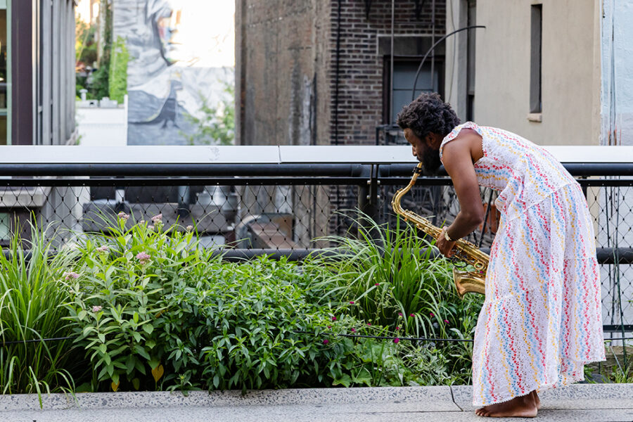

JJJJJerome Ellis Performance Lecture
Join us for a lecture by artist JJJJJerome Ellis followed by an audience Q&A.
JJJJJerome Ellis (any pronoun) is a disabled Grenadian Jamaican American artist, surfer, and person who stutters. Through music, performance, writing, video, and photography, Ellis asks what stuttering can teach us about listening, generosity, and justice. JJJJJerome has the great privilege of being married to poet-ecologist Luísa Black Ellis. They live in a monastery on a creek in traditional Nansemond and Chesepioc territory, a.k.a. Norfolk, Virginia. JJJJJerome dreams of building a sonic bath house! Concepts that organize the artist’s practice include: unknowing, improvisation, fugitivity, illegibility, inheritance, opacity, prayer, gap, contradiction, aporia, eternity, unpredictability, interruption, silence, and devotion. The artist’s body of work includes contemplative soundscapes using saxophone, flute, dulcimer, electronics, and vocals; scores for plays and podcasts; albums combining spoken word with ambient and jazz textures; theatrical explorations involving live music and storytelling; and music-video-poems that seek to transfigure archival documents.
Presented in partnership with SAIC’s Wellness Center
This event will be live captioned by Communication Access Realtime Translation (CART) services. The auditorium is wheelchair accessible and hearing assisted devices are available. For additional access requests, visit saic.edu/access.
Image: JJJJJerome Ellis, Music for the Garden, 2024. Commissioned and produced by High Line Art, presented by the High Line and NYC Parks. Photo by Liz Ligon.